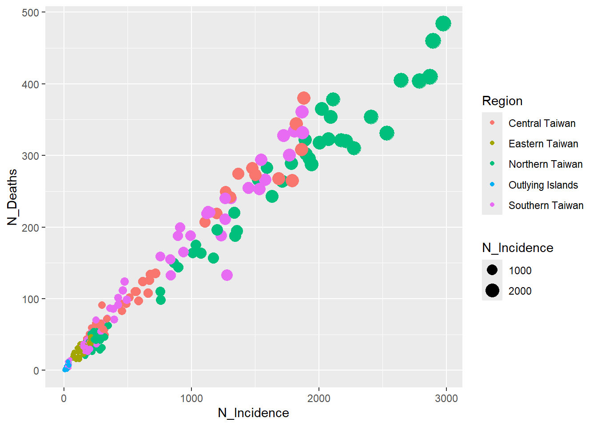
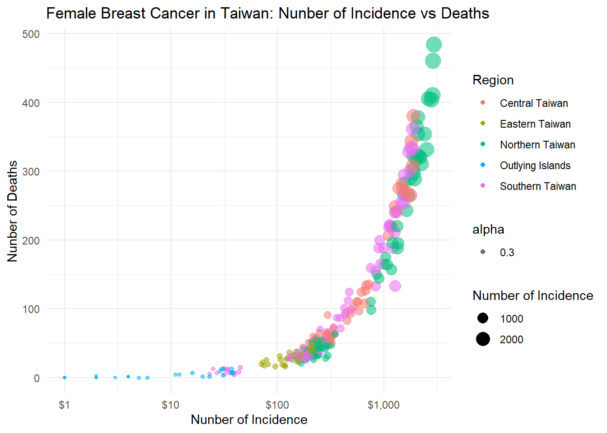

# Load required packages
pacman::p_load(ggplot2, plotly, scales)
# 設定檔案路徑
file_path <- "C:/Users/USER/Desktop/quarto/quarto_website/UTD_SDAR/TWBC_R.csv"
# 讀取 CSV 檔案
TWBC <- read.csv(file_path)
# 檢視資料表格
View(TWBC)
# Create the base plot
bc <- ggplot(TWBC, aes(N_Incidence, N_Deaths, color = Region)) +
geom_point(aes(size = N_Incidence, frame = Year, ids = City))Warning in geom_point(aes(size = N_Incidence, frame = Year, ids = City)):
Ignoring unknown aesthetics: frame and ids# Display the static plot
bc
# Enhance the plot
bc <- ggplot(TWBC, aes(N_Incidence, N_Deaths, color = Region)) +
geom_point(aes(size = N_Incidence, frame = Year, ids = City, alpha = 0.3)) +
scale_x_log10(labels = scales::dollar_format()) +
labs(title = "Female Breast Cancer in Taiwan: Nunber of Incidence vs Deaths",
x = "Nunber of Incidence",
y = "Nunber of Deaths",
color = "Region",
size = "Number of Incidence") +
theme_minimal()Warning in geom_point(aes(size = N_Incidence, frame = Year, ids = City, :
Ignoring unknown aesthetics: frame and ids# Display the enhanced static plot
bc 
# Create the interactive plot
interactive_plot <- ggplotly(bc)
# Display the interactive plot
interactive_plot